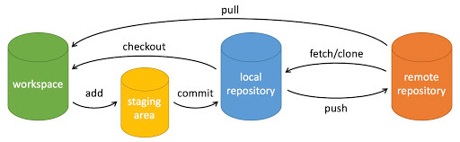

创建仓库提交文件
创建一个版本库
$ git init
Initialized empty Git repository in /Users/xxx/xxx/.git/
把文件添加进暂存区
$ git add readme.txt
$ git add file1.txt file2.txt
# 添加当前目录下的所有文件进暂存区
$ git add .
把文件提交到本地仓库
$ git commit -m "wrote a readme file"
修改上一次commit。比如修改之前提交时的日志，或者追加提交文件等。
$ git commit --amend
查看当前状态，也可以查看到位于哪个分支
$ git status
# On branch master
# Your branch is ahead of 'origin/master' by 202 commits.
#
# Untracked files:
# (use "git add <file>..." to include in what will be committed)
#
# ../profile.svg
# ../templates/customer_service.html
nothing added to commit but untracked files present (use "git add" to track)
查看修改内容
$ git diff readme.txt
diff --git a/readme.txt b/readme.txt
index 46d49bf..9247db6 100644
--- a/readme.txt
+++ b/readme.txt
@@ -1,2 +1,2 @@
-Git is a version control system.
+Git is a distributed version control system.
Git is free software.
本地版本控制
版本查看
$ git log
commit 1094adb7b9b3807259d8cb349e7df1d4d6477073 (HEAD -> master)
Author: Michael Liao <askxuefeng@gmail.com>
Date: Fri May 18 21:06:15 2018 +0800
append GPL
commit e475afc93c209a690c39c13a46716e8fa000c366
Author: Michael Liao <askxuefeng@gmail.com>
Date: Fri May 18 21:03:36 2018 +0800
add distributed
回退到上一个版本，回退到上上个版本
$ git reset --hard HEAD^
HEAD is now at e475afc add distributed
$ git reset --hard HEAD^
通过版本号更改到指定版本，可以是之后的版本，也可以是之前的版本
$ git reset --hard 1094a
HEAD is now at 83b0afe append GPL
回退到之前的版本之后，无法通过git log查看到后面的版本，可以通过git relog来查看每一次输入的命令，查看到后面版本的版本号
$ git reflog
e475afc HEAD@{1}: reset: moving to HEAD^
1094adb (HEAD -> master) HEAD@{2}: commit: append GPL
e475afc HEAD@{3}: commit: add distributed
eaadf4e HEAD@{4}: commit (initial): wrote a readme file
远程仓库
配置本地全局用户名和Email
$ git config --global user.name "Your Name"
$ git config --global user.email "email@example.com"
# 查看配置信息
git config --list
给本地特定仓库设置特定的用户名和Email，需要去到该仓库的根目录下利用git config进行设置。去掉--global参数。可以在该仓库的.git/config查看具体的配置信息。
$ git config user.name "Your Name"
$ git config user.email "email@example.com"
验证本地git和github的连通性
$ ssh -T git@github.com
Hi powerAmore! You've successfully authenticated, but GitHub does not provide shell access.
关联远程仓库，并把远程仓库取名为origin
$ git remote add origin git@github.com:xxx/learngit.git
第一次将本地仓库master分支推送到远程origin仓库。-u参数会将本地master分支和远程master分支做关联。
$ git push -u origin master
Counting objects: 20, done.
Delta compression using up to 4 threads.
Compressing objects: 100% (15/15), done.
Writing objects: 100% (20/20), 1.64 KiB | 560.00 KiB/s, done.
Total 20 (delta 5), reused 0 (delta 0)
remote: Resolving deltas: 100% (5/5), done.
To github.com:michaelliao/learngit.git
* [new branch] master -> master
Branch 'master' set up to track remote branch 'master' from 'origin'.
后续将本地仓库master分支内容推送到远程仓库
$ git push origin master
查看远程仓库信息
$ git remote -v
origin git@github.com:xxx/learn-git.git (fetch)
origin git@github.com:xxx/learn-git.git (push)
解除和远程仓库origin的关联。如果要删除远程仓库，需要去到远程仓库所在地址进行删除。
$ git remote rm origin
从远程仓库克隆一个本地库
$ git clone git@github.com:xxx/gitskills.git
Cloning into 'gitskills'...
remote: Counting objects: 3, done.
remote: Total 3 (delta 0), reused 0 (delta 0), pack-reused 3
Receiving objects: 100% (3/3), done.
从远程仓库拉取代码并合并本地版本
$ git pull
$ git pull origin
git pull其实就是 git fetch 和git merge FETCH_HEAD 的简写。格式如下：
# git pull <远程主机名> <远程分支名>:<本地分支名>
# 拉取远程仓库origin的master分支，与本地的brantest分支合并
$ git pull origin master:brantest
# 如果远程分支是与当前分支合并，则冒号后面的部分可以省略
$ git pull origin master
分支操作
创建dev分支，然后切换到dev分支
$ git checkout -b dev
Switched to a new branch 'dev'
git checkout命令加上-b参数表示创建并切换，相当于以下两条命令。其中git branch dev为创建本地分支，git checkout dev为切换分支
$ git branch dev
$ git checkout dev
Switched to branch 'dev'
switch也可以用来切换分支，相比checkout更容易理解。因为撤销修改是git checkout -- <file>，同一个命令，有两种作用，确实有点令人迷惑。
创建并切换到新的dev分支
$ git switch -c dev
直接切换到已有的master分支
$ git switch master
用git branch命令查看当前分支
$ git branch
* dev
master
把dev分支的工作成果合并到当前所处的master分支。Fast-forward信息表示这次合并是“快进模式”，也就是直接把master指向dev的当前提交。也不是每次合并都能Fast-forward。
$ git merge dev
Updating d46f35e..b17d20e
Fast-forward
readme.txt | 1 +
1 file changed, 1 insertion(+)
删除dev分支
$ git branch -d dev
Deleted branch dev (was b17d20e).